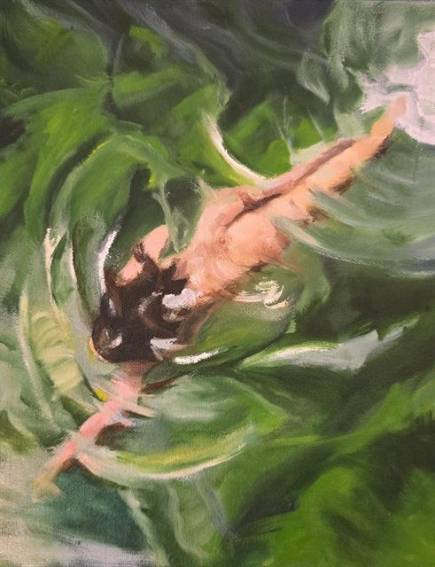

Saltar al contenido
Meraki
Academia Arte-Café
← Volver
Artista
Gabriela Granados
Sobre el artista
Explora la luz y el color: del cristal en tonos grises a remolinos verdes.
Obras · 2 obras
Copa de vino
Gabriela Granados

Entre verdes
Gabriela Granados